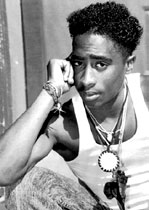
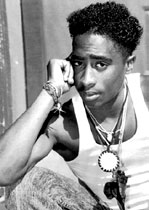

Tupac Amaru Shakur
Born: June 16, 1971
Death: September 13,1996
Tupac Amaru was named after an Inca Chief. Tupac
Amaru Shakur grew up around many influential leaders of the Black Panther Party.
His mother, born Alice Faye Williams, who later changed her name to Afeni Shakur,
was a section leader in the Black Panther Party. The Black Panther Party spurn from
a movement to re-open the New York Public Schools, feed school kids breakfast and
gain equal civil rights for African Americans.
 Tupac was born on June 16, 1971, one month prior to his birth, a pregnant Afeni had
just defended herself in court and been acquitted of 156 counts charged against her
and other members of the Black Panther Party-called the Panther 21. Living in the
Bronx, she found steady work as a paralegal and raised her son to respect the value
of obtaining knowledge.
From childhood, everyone called him the "Black Prince." For misbehaving, he had to
read an entire edition of The New York Times. When he was two, his sister, Sekyiwa,
was born. Her father, Mutulu, was a Black Panther who, a few months before her birth,
had been sentenced to sixty years for a fatal armored car robbery and had to leave
the family.

Two years later, Afeni was having trouble finding work (reportedly due to drug addiction and her past with the Black Panthers), and moved the family to live with a friend in Marin City, California. Shakur described this move from Baltimore and the arts school as "where I got off track". He showed contempt for law enforcement, being hassled occasionally for playing music loudly. In August of 1988, his stepfather Mutulu was sentenced to sixty years in prison for armed robbery after being on the FBI's Ten Most Wanted list for several years. Shakur soon moved in with a neighbor and started selling drugs on the street, but also made friends who helped spark his interest in rap music. One of these was Ray Luv, and with a mutual friend named DJ Dize ("Dizz-ee"), they started a rap group called Strictly Dope. Their recordings were later released in 2001 under the name Tupac Shakur: The Lost Tapes. Their neighborhood performances brought Shakur enough acclaim to land an audition with Shock G of Digital Underground.
In 1990, Shakur joined as a roadie and dancer for Digital Underground. His early lyrics were unremarkable, and he was viewed ambivalently due to his tendency toward self-important or occasionally violent behavior. On a song for the Nothing But Trouble movie soundtrack, Same Song, Shakur was given his first opportunity to rap on a big-time record. Later, other members from the Digital Underground group, most notably Shock G, would recall being impressed by Tupac's ability to say so much in such a small amount of time, being given only eight bars on the record.
Tupac was born on June 16, 1971, one month prior to his birth, a pregnant Afeni had
just defended herself in court and been acquitted of 156 counts charged against her
and other members of the Black Panther Party-called the Panther 21. Living in the
Bronx, she found steady work as a paralegal and raised her son to respect the value
of obtaining knowledge.
From childhood, everyone called him the "Black Prince." For misbehaving, he had to
read an entire edition of The New York Times. When he was two, his sister, Sekyiwa,
was born. Her father, Mutulu, was a Black Panther who, a few months before her birth,
had been sentenced to sixty years for a fatal armored car robbery and had to leave
the family.

Two years later, Afeni was having trouble finding work (reportedly due to drug addiction and her past with the Black Panthers), and moved the family to live with a friend in Marin City, California. Shakur described this move from Baltimore and the arts school as "where I got off track". He showed contempt for law enforcement, being hassled occasionally for playing music loudly. In August of 1988, his stepfather Mutulu was sentenced to sixty years in prison for armed robbery after being on the FBI's Ten Most Wanted list for several years. Shakur soon moved in with a neighbor and started selling drugs on the street, but also made friends who helped spark his interest in rap music. One of these was Ray Luv, and with a mutual friend named DJ Dize ("Dizz-ee"), they started a rap group called Strictly Dope. Their recordings were later released in 2001 under the name Tupac Shakur: The Lost Tapes. Their neighborhood performances brought Shakur enough acclaim to land an audition with Shock G of Digital Underground.
In 1990, Shakur joined as a roadie and dancer for Digital Underground. His early lyrics were unremarkable, and he was viewed ambivalently due to his tendency toward self-important or occasionally violent behavior. On a song for the Nothing But Trouble movie soundtrack, Same Song, Shakur was given his first opportunity to rap on a big-time record. Later, other members from the Digital Underground group, most notably Shock G, would recall being impressed by Tupac's ability to say so much in such a small amount of time, being given only eight bars on the record.